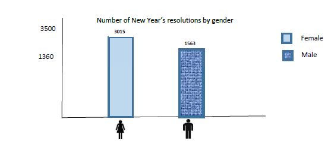

Introduction and what we wanna visualize..
With our visualization, we want to be able to answer the following questions:
The initial design included a map and supporting graphs (below) to show discrete information about the data. We used a map in order to show all the data points in the data set at the same time and how they are spread out. Each point on the map represents a tweet and the location from which it was tweeted. Users can get all the information about a data point by clicking on it (shown on image above). The slider below the map allows users to select the range of time
Above the map, there are checkboxes with each checkbox representing a category or a gender (male and female). This will enable a user select any number of categories and that would change the map to show only selected categories.
After the presentation of our initial design, we received feedback from Michelle and other students. We thought about how each of these points would affect our final visualization and made a few changes.
We thought the colors representing the categories were distinct enough and some of the symbols might be misinterpreted therefore we decided not to add symbols.
Users can compare only 2 states at a time. A state is selected by clicking on its location the map or by choosing it from the combo box. This changes the graphs as well therefore providing discrete information. Comparisons and be made between 2 states for a particular category or a single category.
The final implementation is very similar to our initial design.This was expected as we did not get a lot of negative feedback after our 1st presentation.
With this visualization, we are able to:
The visualization is interactive and enables users to choose what information they would like to view at a particular time. Furthermore, the visualization covered the 4 main categories discussed by Ben Shneiderman. These are Overview, Zoom, Filter and Details on Demand. The map provided the overview while the interactivity provided the other 3.
The map overview (before any interaction) allows a user to see all the data points at the same time. From this, the user can notice patterns or see which categories are popular in which areas.
Users can zoom into a particular state and will be able to view that information better. The graphs will also show discrete information about that particular state. Using the same functionality, comparisons can be made between 2 states.
Filtering can be done on both the categories and the genders. This allows users to see information about a specific category in a specific state or on the entire map. Filtering also changes the graphs to enable users get more information about the category or gender they have selected.
Clicking on a point on the map shows all the information about that data point on the map. This allows a user to get all the information about that tweet while having an overview in the background.
The group worked together and used the Slack application for communication and file sharing. Google drive was also used to share files as well work collaboratively. All the members agreed on the final design. Some of the work was divided up among the 3 members in the following way:
| Name | Work done |
|---|---|
| Michael Kyeyune | Implementation of the map and coordinates |
| Thandile Xiphu | Implementation of the graphs |
| William Lumala | Editing HTML code and web page layout |